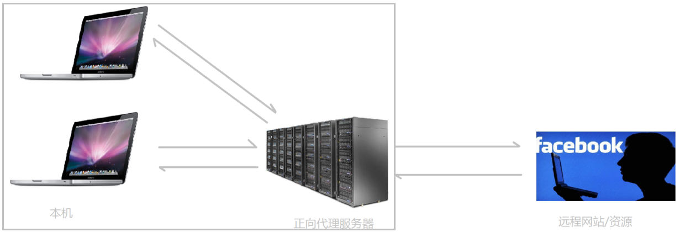
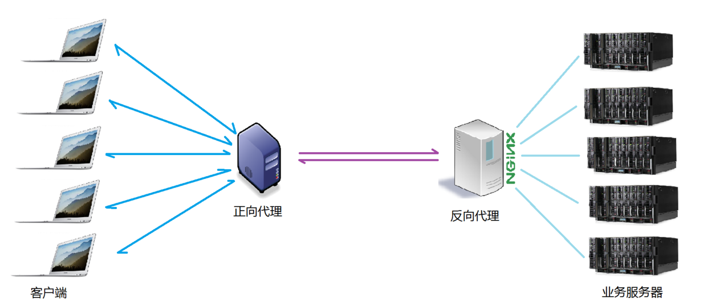

Nginx 示例2:实现反向代理
关于代理
说到代理，首先我们要明确一个概念，所谓代理就是一个代表、一个渠道；
此时就涉及到两个角色，一个是被代理角色，一个是目标角色，被代理角色通过这个代理访问目标角色完成一些任务的过程称为代理操作过程；如同生活中的专卖店~客人到adidas专卖店买了一双鞋，这个专卖店就是代理，被代理角色就是adidas厂家，目标角色就是用户。
正向代理
说反向代理之前，我们先看看正向代理，正向代理也是大家最常接触的到的代理模式，我们会从两个方面来说关于正向代理的处理模式，分别从软件方面和生活方面来解释一下什么叫正向代理。
在如今的网络环境下，我们如果由于技术需要要去访问国外的某些网站，此时你会发现位于国外的某网站我们通过浏览器是没有办法访问的，此时大家可能都会用一个操作FQ进行访问，FQ的方式主要是找到一个可以访问国外网站的代理服务器，我们将请求发送给代理服务器，代理服务器去访问国外的网站，然后将访问到的数据传递给我们！
上述这样的代理模式称为正向代理，正向代理最大的特点是客户端非常明确要访问的服务器地址；服务器只清楚请求来自哪个代理服务器，而不清楚来自哪个具体的客户端；正向代理模式屏蔽或者隐藏了真实客户端信息。来看个示意图（我把客户端和正向代理框在一块，同属于一个环境，后面我有介绍）：

客户端必须设置正向代理服务器，当然前提是要知道正向代理服务器的IP地址，还有代理程序的端口。如图。
总结来说：正向代理，"它代理的是客户端，代客户端发出请求"，是一个位于客户端和原始服务器(origin server)之间的服务器，为了从原始服务器取得内容，客户端向代理发送一个请求并指定目标(原始服务器)，然后代理向原始服务器转交请求并将获得的内容返回给客户端。客户端必须要进行一些特别的设置才能使用正向代理。
正向代理的用途： （1）访问原来无法访问的资源，如Google （2） 可以做缓存，加速访问资源 （3）对客户端访问授权，上网进行认证 （4）代理可以记录用户访问记录（上网行为管理），对外隐藏用户信息
反向代理
明白了什么是正向代理，我们继续看关于反向代理的处理方式，举例如我大天朝的某宝网站，每天同时连接到网站的访问人数已经爆表，单个服务器远远不能满足人民日益增长的购买欲望了，此时就出现了一个大家耳熟能详的名词：分布式部署；也就是通过部署多台服务器来解决访问人数限制的问题；某宝网站中大部分功能也是直接使用Nginx进行反向代理实现的，并且通过封装Nginx和其他的组件之后起了个高大上的名字：Tengine，有兴趣的童鞋可以访问Tengine的官网查看具体的信息：http://tengine.taobao.org/。那么反向代理具体是通过什么样的方式实现的分布式的集群操作呢，我们先看一个示意图（我把服务器和反向代理框在一块，同属于一个环境，后面我有介绍）：

通过上述的图解大家就可以看清楚了，多个客户端给服务器发送的请求，Nginx服务器接收到之后，按照一定的规则分发给了后端的业务处理服务器进行处理了。此时~请求的来源也就是客户端是明确的，但是请求具体由哪台服务器处理的并不明确了，Nginx扮演的就是一个反向代理角色。
客户端是无感知代理的存在的，反向代理对外都是透明的，访问者并不知道自己访问的是一个代理。因为客户端不需要任何配置就可以访问。
反向代理，"它代理的是服务端，代服务端接收请求"，主要用于服务器集群分布式部署的情况下，反向代理隐藏了服务器的信息。
反向代理的作用： （1）保证内网的安全，通常将反向代理作为公网访问地址，Web服务器是内网 （2）负载均衡，通过反向代理服务器来优化网站的负载
项目场景
通常情况下，我们在实际项目操作时，正向代理和反向代理很有可能会存在在一个应用场景中，正向代理代理客户端的请求去访问目标服务器，目标服务器是一个反向单利服务器，反向代理了多台真实的业务处理服务器。具体的拓扑图如下：

二者区别
截了一张图来说明正向代理和反向代理二者之间的区别，如图。

在正向代理中，Proxy和Client同属于一个LAN（图中方框内），隐藏了客户端信息；
在反向代理中，Proxy和Server同属于一个LAN（图中方框内），隐藏了服务端信息；
实际上，Proxy在两种代理中做的事情都是替服务器代为收发请求和响应，不过从结构上看正好左右互换了一下，所以把后出现的那种代理方式称为反向代理了。
示例
vim /etc/nginx/sites-enabled/default
在server段下添加一个新的location如下后保存退出
location /pythonproxy {
proxy_pass http://localhost:8000;
}
#重载nginx
nginx -s reload
cd ~ && mkdir -p pythonproxy
#制作首页
echo 'This is Python3 Web Server' > ~/pythonproxy/index.html
#启动Python Web服务器
python3 -m http.server
访问网址{url}/pythonproxy